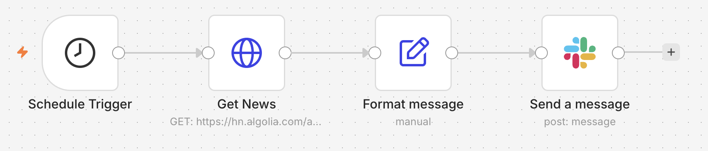
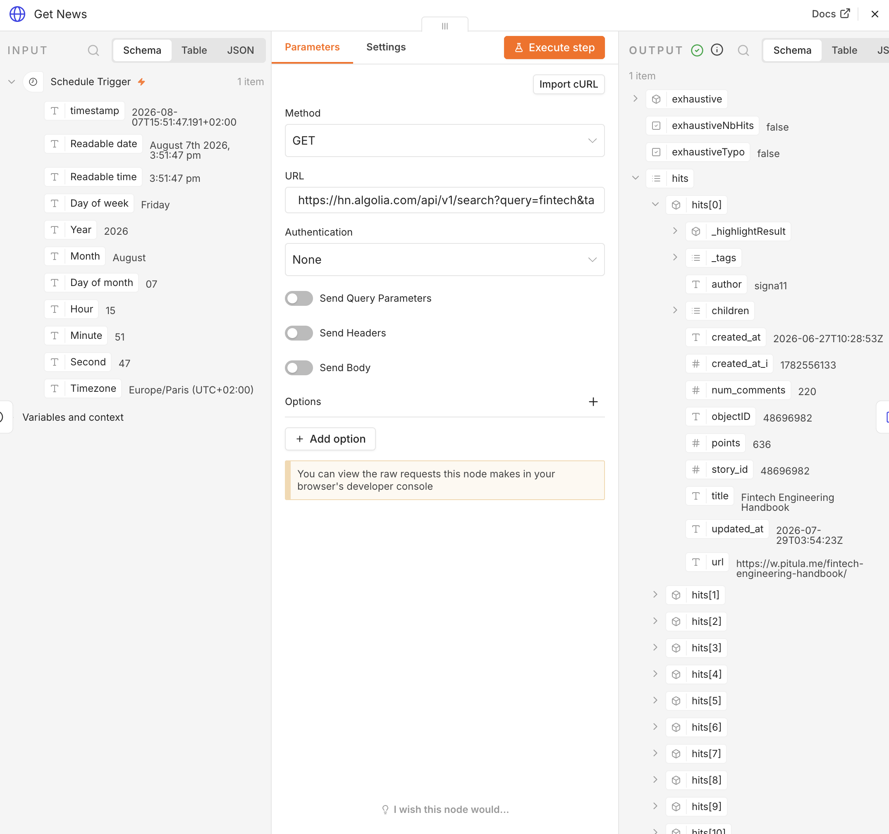

Ex 1.1 — Good Morning, Founder ☕
Goal: every morning at 9:00, a digest of food-industry news arrives in Slack by itself.
What you learn: scheduled triggers, calling an API, reading JSON, {{ }} expressions.
Context: the FoodFleet founder wants one short news digest every morning about her market. Today you build it for her.
🐛 This workflow has ONE bug — on purpose
You import a skeleton we prepared. It contains exactly one bug, in the "Format message" node. Finding it and fixing it is part of the exercise. Real workflows always arrive broken.
Step 0 — Import the skeleton
- Download
good-morning-founder.json - In n8n: ⋯ menu (top right) → Import from file → pick the file.
- You should see 4 nodes:
Schedule Trigger→Get news (HTTP)→Format message→Slack.

CP1 — The workflow runs
Click Execute workflow. Some nodes turn green. Maybe not all of them. That is normal at this stage.
✅ Done when: at least the first 2 nodes are green. → CP1.
CP2 — Look at what the API returns
- Open the Get news (HTTP) node. It calls the Hacker News search API:
https://hn.algolia.com/api/v1/search?query=fintech&tags=story - Look at the OUTPUT panel. Find the
hitslist. Each element has atitle, aurl, andpoints. - Replace
fintechwith a FoodFleet keyword:food delivery,foodtech,logistics,catering. Use one English word or two. - Re-run the node.

✅ Done when: OUTPUT shows articles about the food or delivery market. → CP2.
Hint 1
OUTPUT empty, hits: []? Your keyword is too narrow. Use a broader English word. You
need results for the next step. They do not have to be perfect.
CP3 — Find and fix the bug 🐛
- Open Format message. It builds the digest text with expressions:
☀️ Good morning! Here is your FoodFleet digest for {{ $now.format('dd/MM') }}: 1. {{ $json.hits[0].titel }} → {{ $json.hits[0].url }} 2. {{ $json.hits[1].title }} → {{ $json.hits[1].url }} 3. {{ $json.hits[2].title }} → {{ $json.hits[2].url }} - Run the workflow. Read the message it produces. One line is wrong.
- Fix it. (Reflex 2 on the survival card: the previous node shows you the real field names.)
✅ Done when: all 3 lines show a real title. Nothing empty. → CP3.
Hint 1
Compare line 1 with lines 2 and 3. Character by character.
Hint 2
A field that does not exist gives no red error. It gives an empty string. So everything is green and a piece of the sentence is simply missing. That is why this bug is nasty.
Hint 3 — the answer
In the API's JSON the field is called title. Line 1 asks for titel.
CP4 — The digest arrives in Slack
- Open the Slack node: credential
Workshop Slack, channel#news, message = the output ofFormat message(already wired). - Execute workflow → check Slack.
The skeleton arrives with the wrong channel
The imported JSON has #veille in the Slack node (leftover from another cohort).
Change it to #news. Same thing in Ex 1.3.
✅ Done when: your digest is in #news. → CP4.
CP5 — Schedule it for 9:00 tomorrow
- Open Schedule Trigger → set: every day, 09:00.
- Top right of the canvas: hit Publish (older n8n versions call this toggle Active).
✅ Done when: the workflow shows Published. Tomorrow at 9:00 the digest arrives alone. → CP5. 🎉
Finished early?
- Add the
pointsof each article:{{ $json.hits[0].points }} pts - Two keywords at once. Read the API docs:
query=foodtech%20OR%20catering - Build the list with a loop instead of three hardcoded lines. Look at the Split Out and Aggregate nodes. You will need them again in Ex 1.3 and 2.2.